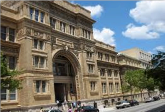
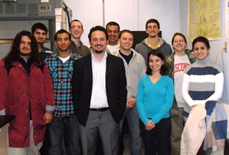

The Electrochemical Energy Systems Laboratory (ECSL) was established in the Mechanical Engineering and Mechanics Department at Drexel University, Philadelphia in 2009 by Dr. Emin Caglan Kumbur. The core mission of ECSL is to advance the science and technology necessary to develop next generation electrochemical energy systems, in particular flow batteries, supercapacitors, and fuel cells for automotive, stationary, and portable applications.
Due to the nature of these systems, research at ECSL is highly interdisciplinary. We utilize a comprehensive approach, including: advanced performance diagnostics, system/component design, materials characterization, and computational modeling. The ECSL team has been growing rapidly, embodying researchers at all levels. Due to the interdisciplinary nature of the research, our team consists of individuals with expertise in transport, electrochemistry, materials science, reacting flows, and experimental design/testing. Team members have access to a vast array of equipment and facilities at Drexel.
 Please browse our website to learn more about our research activities, publications and facilities. We do our best to frequently update our website. Please feel free to contact Dr. Kumbur if you would like to learn more about ECSL.